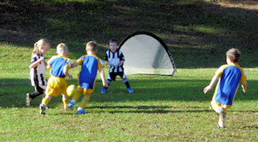
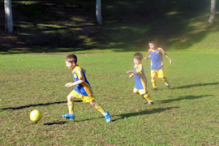
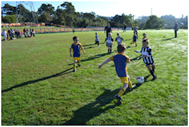
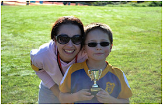
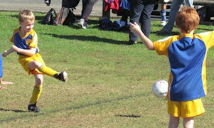
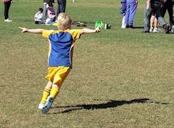
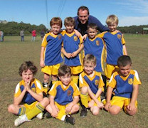
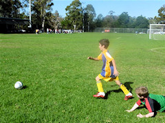
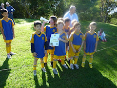

| Match Report - 07 May 2011 |
|
|
|
|
|
|
|
|
U6 Green
7 - 0
|
|


Wasn't it a beautiful morning to be out on the fields in the sunshine. The NRS
U6 Green team were so enthusiastic before the game they were eager to play on
the full side field just to show that that the 3 weeks off hadn't slow them down.
The game started with a fast goal from Christian followed up with a goal from
Blake and Jasmine. The team were passing very well and Elijah, Will and William
made some very good plays. All the kills that are being praciced at training
are certainly helping the U6 green to develop, you would think that this team
has played together for a lot more than 3 games. All the family were thrilled
and the players siblings helped by cheering on the sideline.
At half time we were all very impressed with the most amazingly sculptured
oranges from Yukari. This lead the team back on the field to attack and defend
with more energy. Great passing was witnessed throughout. Will continued with
some of his signature runs from our defending goal through to the attacking
goal and scoring, Elijah also made some swift saves ensuring that a goal was
not scored. Christian scored another 2 goals and Jasmine scored another in the
scond half. The sportsmanship seen from both young teams was inspiring.
Every player gave 100% today and Christian was awarded Player of the week.
- Sarah Robson
|
|
|
|
U6 Purple A
|
|
After a couple of weekends off for chocolate eggs and bad weather the boys were
super keen and full of energy under the blue sky at Hunters Hill. They got off
to fantastic start with the first goals being scored in the first few minutes
of the game, much to their delight. The boys showed great hunger for the ball
and their fast runs down the field resulted in a flurry of more goals than I
could count, despite the opposition's best attempts to shield the goal. Many of
them scored multiple goals and now they have a taste for it there will be no
stopping these boys! They have obviously been paying attention at training as
their skills are improving every week.
Liam was awarded Player of the Match for his enthusiasm, big kicks and
determination today. Special mention must go to Lachlan who despite being too
unwell to play, came along to cheer the team on with his Dad & team coach Tim.
Also, special mention to Gavin Lochrin for rescuing multiple balls from the
creek alongside the fields!!
- Nerradene Wolken
|
|
|
|
U6 Purple B
|
|
The morning was nice and sunny to match our enthusiasm today. Our team is
improving every week, and we had some lovley tackling and kicking happening.
Goals were scored by Alexis, Reilly and Ethan, and Madison even kept playing
when she lost her first tooth ever.
Players of the match Reilly and James. Well done team!
- Meryl Aldous
|
|
|
|
U6 Red A
2 - 4
|
|


After a long three week break, combined with a frosty morning, the boys were slow
to get going and conceded a three-goal lead early. But the half-time oranges and
inspiring words from the coach gave the boys the energy they needed.
Toby quickly opened our account with the first goal of the season, shortly
followed by a stellar goal from Ben. Oliver worked hard in defence and saved a
certain goal. Jake and Hayden displayed some excellent attacking skills and the
team only conceded a single goal in the second half.
Even though the final score was a 4-2 loss, the boys showed outstanding
improvement by working more as a team and showing great enthusiasm. Player of
the Match was Ben. They should all be very proud of themselves - Well done, boys!
- Lenore Pearson
|
|
|
|
U6 White C
0 - 2
|
|
Jack, Kurt and Ryan played an outstanding game against All Saints Hunters Hill.
Slightly undermanned the boys held there own and lost 2-0 to a very gracious
Hunters Hill. Hunters Hill agreed to extra drinks breaks so that we could complete
the game and in the gorgeous sunshine the boys almost scored twice but didn’t
quite have enough legs !
Fantastic sportsmanship all-round and Jack Bowen received player of the match!
- Lisa Mach
|
|
|
|
U7 Green
3 - 3
|
|


Our first game in a number of weeks with School hols and a washout. A couple of
minutes after the kick off showed both teams were pretty similar in ability. All
Saints were the first to score, they pressured our goals early and we defended
very well with Jayden saving a number of goals.
Luke, Alex and Will all had some good shots at the goals. Dillan's defensive pull
under surprised everyone with great foot skills, Bailey got into the mix. All

Saints scored again and at 2-0 with 5 mins to go in the first half Will scored a
cracker of a goal to open his account for the year.
Moments later we were in again with Luke hitting the back of the net. At half
time 2-2 the coache's message was clear - We need to control the ball boys, be
the first to kick it, Do we want the ball?
Everyone contributed in the second half with all the boys showing they want the
ball but unfortunately All Saints scored again 2-3. Jayden saved a certain goal
and passed it back up the line, and moments later Alex found the net at 3-3.
Both teams tried so hard to score the winner but a good result for us, I was
really proud the way the boys quickly got into position when the ball went out.
Good work guys.
Player of the match - Jayden (for some of the best defence I’ve seen this year).
- Marc van Hilten
|
|
|
|
U7 Red A
2 - 0
|
|
Finally a great day for soccer was seen, the rain has stopped & the boys were
more then keen to play soccer again.
Today we played against the Putney Rangers & it was great to play against a team
who was very evenly matched to us. We also welcomed Nic back this game as he had
to have the first few games off due to a broken arm but recovered now. He showed
some wonderful passing skills as well as what he is well known for some huge big
kicks from one end of the field to the other. The ball moved evenly from one end
to the other with both teams defending well but I think our team was on the attack
a little more, but by half time no score had been seen from either team.
After an orange pick me up the boys were firing again & this saw Cooper come thru
with the first goal of the day. The boys were very excited & keen to get going
again & before we knew it Jack came thru with our second goal. The boys are showing
great potential & are really starting to work together very well, starting to
dribble the ball, pass the ball instead of just getting in & booting the ball as
big as they can, so this is great to see these skills developing.
Man of the match went to Hayden but all the boys need to be congratulated on a
great win & a great game.
- Aleisha Cossettini
|
|
|
|
U7 White A
4 - 4
|
|
What a fantastic day for soccer!
North Ryde met their match today with a really even contest. The 4-all score
could have been much higher with plenty of attemps for goal from both sides.
Congratulations to Joshua, Isaac and Emily for all scoring goals today, and a
special mention to the player from Ryde who scored our first goal.
I was particularly proud of all our players today. Most of North Ryde were
knocked about or pushed over during this game but they all picked themselves
up and played on. Especially Emily who used determination to pick herself up
with a perfect smile and score a goal. Well done.
Isaac was our player of the match today. From the moment he walked onto the
field everything just clicked. He was in most of the play throughout the game
and was unlucky not to have scored more goals. Great work.
- Kirrilee
|
|
|
|
U7 White C
|
|
What a beautiful morning to play soccer. The boys played a fantastic match
against Gladesville Sharks. We led all the way with some very good defence
that stopped the Sharks scoring a number of times. Our defence is improving
every week and many of the players are now really getting involved in the
game and attacking the ball.
Jack had a great game scoring all three goals, however every one of our
players contributed to the goals in some way. The team should be very proud
of themselves and hopefully we can keep it going this week!!
- Sandy Phillips
|
|
|
|
U8 Brown
3 - 4
|
|


After the long hike to Glenhaven the team played started the match with a player
down due to a few technical difficulties along the way. Needless to say, Sam
scored a great goal to have North Ryde in the lead to the half time break.
The game was evenly matched and the team played so well especially as they were
a man down for over half the game. After half time break Glenhaven scored a fast
4 goals but the NRS Brown team did not give up and responded with skill and
determination with another 2 goals from Declan who made some amazing runs the
length of the field.
All the players alternated the position of goalie and did a fine job. Special
mention to Sam who had some great field length runs in the second half and was
unlucky not to convert. Isaac was again great in attack and defence supporting
his team. Ben was fast to make some convincing changes in play. A big thanks
goes to Ben's dad - Darren for Coaching and Umpiring.
The player of week was awarded to Luca for a excellent all round game - Well Done!
- Sarah Robson
|
|
|
|
U8 Orange
2 - 4
|
|
This week felt like the first game of the season after weeks of weather delays
and holidays, we made the long haul out to Redfield no 2 Dural, the ground was
heavy which helped our free running fancy footwork mud sliding style.
In the pre match pep talk our super coach Darren gave the boys 3 things to
remember, keep your heads up, pass the ball and to remember to have fun.
The man of the match Shaun did great goal keeping in the first half, and
managed our first goal, well done!!
The boys defended well, we made some great breaks up field and the game was
very exciting. With a half time score of 0 - 2, our team fought back with 2
goals of our own in the second half.
All the boys did great and it looked like they had heaps of fun and they left
the field with plenty of mud and grass, proudly battle stained.
We were beaten by the clock in a close finish 2 - 4.
- Tony Saba
|
|
|
|
U8 Yellow
7 - 2
|
|
What can I say, words escape me on the absolute brilliance displayed by all
players. The result speaks for itself and is an obvious a testament to just
how good this team really is. The win against Macquarie Dragons was both
comprehensive and convincing. Right from kick off, North Ryde were dominant,
with play contained well inside Dragon territory for most of the game.
Opportunities just kept coming, with the first goal being scored by Fletcher
after about 7 minutes. This was quickly followed, no less than three minutes
later with a goal from Chris. A few minutes out from half time and Fletcher
delivers the second of four goals scored by him today to take the half time
score to 3-0.
The whilst blows and time on for the second half is called. Players are
positioned strategically in a 3 1 2 combination and Chris takes over as goal
keeper from Jacob. Play commences. Although North Ryde continued to dominate,
they were awarded a penalty during the very first few minutes of the second
half. The penalty was taken by Damien. The kick was fantastic and powered
into the opposing team players and deflected into the goal. Ten minutes into
the second half, and Fletcher scores his third goal of the match. Right about
now, the Macquarie Dragons pick up the pace. The supercharges must have kicked
in. They were not going to surrender and quickly created plenty of opportunities
to attack. Persistence payed off, 2 goals were scored very quickly. Eight
minutes to go. The score line favours North Ryde five goals to two. Both teams
step up the pace and continue to press on toward full time. With victory in
their sights North Ryde gets the upper hand with both Damian and Fletcher each
scoring at 4 and 2 minutes before full time.
Great match by all players and pleased to see how well this team is developing.
Full time score North Ryde seven (7) and Macquarie Dragons two (2). North Ryde
goal scorers: Fletcher Gusse (4), Damien Granet (1), Christopher Watt (1) and
Own Goal (1).
Player of the match - Patrick Milne
- David Watt
|
|
|
|
U9 Division 1
1 - 4
|
|
The team has had several weeks off with the inclement weather so this week was
like starting the season over again.
Leading up to the game most of the boys have been doing Kick Start to hone their
skills and (Coach) Ando has keenly been watching and integrating these skills
into the game plan & training sessions.
This weeks game showed improvement again. All the boys are improving on their
positional awareness. Keeping in mind that U9's is the first year the boys have
to adhere to full positional team play. They are picking it up and just need a
few weeks of consecutive play to click it all in to place.
Not sure if the boys couldn't hear Ando much during the game as the opposition
Coach was very loud and vocal, as well as offering suggestions to the ref most
of the time. From the other side of the field the only thing I could hear was
the constant orders and refereeing tips coming from their coach which drowned
out everything else.
Whilst the score was 1-4 in favor of Normanhurst all our team put in solid
performances to contribute. There were very few opportunities to attack their
goal as Normanhurst defended very well, especially the one other bullet strike
at their net which their goalie just got the tip of his toe to which deflected
just past their net.
Jarrod took a heavy hit and it took a minute before play stopped. Fortunately
Jarrod came through it ok though was a little shaken for a time.
Man of the match Ronan was able to break through with a well placed strike to get
our only goal for the match.
- Berny Barber
|
|
|
|
U9 Division 3
3 - 2
|
|
After a week off and two washouts it seems like ages since we had played so it
was great to see the sun out and a beautiful morning greet us. The boys were due
to play Ryde saints United at River Glade. The venue caught nearly everyone out
with lack of parking and difficulty in getting there - so much so that we had to
start the game with only 7 of our players. With the rest arriving a few minutes
into the game.
The team was looking good from the start with some good movement of the ball
throughout the team. The teams seemed fairly evenly matched but it was Ryde Saints
that took first blood with a goal after six minutes of play. This didn't seem to
deter the boys much and a couple of attacking opportunities followed with a reward
coming almost 11 minutes into the game when Darcy found the net to level the
scores. Both teams had a few more attempts throughout the half but the scores
remained as they were for the half time break.
The second half continued in much the same fashion with the efforts of both teams
somewhat hampered by the exceedingly long grass in areas of the pitch. Close
opportunities at both ends were there with North Ryde gaining an advantage in a
goal mouth scuffle and Luke Wood planting the loose ball into the back of the net.
The boys enjoyed their lead for a while until the Ryde Saints managed to level
the scores again. at this point though our boys were looking the better team and
were getting most of the ball. Unfortunately for some of that possession they
seemed to be tackling their own players - something we will need to work on. But
it soon paid off when at almost 14 minutes into the second half Darcy put another
goal away to put us back in front. This one goal lead was held to the end and gave
the boys their first win and very much a deserved one.
Kaiden took the certificate home for the match with a great passing display for
the whole match finding his team mates many times. The boys were happy with their
first win of the season and hopefully are now keen for more.
- Darren Mason (Manager)
|
|
|
|
U11 Division 1
1 - 3
|
|
The contest against our age-old rivals West Pennant Hills this morning was marred
with long periods of play that can only be described as scrappy at best, and
resulted in a match that we will probably want to shelve in the
What was that? basket for possible future reference.
It did not start badly though. Within a few minutes of the whistle we were
starting to apply a fair amount of pressure on the WPH defence and a superb
passing combination from Charlie to Sam and David ended with a blinder into the
top-right corner of the WPH nets. With their tails up, the team stuck to their
attacking game-plan and it seemed that everything was right with the world.
It is not exactly known at what point the tables began to turn on us, but it
seemed to be towards the end of the second half at the time that the sideline
substitutions started to roll out. And not because of the players that were being
run on or off the field, but rather because of the complicated substitution process
itself. It seemed that each substitution had the tendency to break a playing
partnership that had developed over the preceding few minutes, leading to an
inevitable disruption to the rhythm and momentum of the play that would take
another few minutes to re-establish again, and exacerbated by the substitution
of two or more players at the same time. But that is the nature of the beast and
we will simply need to learn to be smarter in the manner in which we manage our
replacements. The damage had been done though, and two quick goals by WPH put us
one goal in the red at the break.
Despite all their efforts, the team could not recover their composure in the
second half of the game and were unable to stop a rampant WPH from scoring a
third and final goal to which we had no answer. Oscar P came close to scoring on
one occasion when a great through-ball over defence gave him an opportunity to
charge down a loose ball, narrowly losing the chase to the WPH keeper who had
advanced well out of his goalkeeping area to halt the challenge. Dion also came
close to scoring when he made good purchase on a ball that had rebounded from
a cross into the goalmouth, his volley strike just narrowly missing the
right-hand goalpost.
It was not a great game from a NRS perspective, but it does not take away the
good football that was being dished out by the WPH team. They left us quite
flat-footed throughout most of the second half with a slick positioning and
passing game and in all respects deserved the win. Well done to them. A special
mention must be made for Tim who had an extraordinary time as keeper between the
posts today with some masterful saves, and did much to keep the scoreline in
check. Well done Tim!
There were a lot of lessons to be learnt from this game (as there always are),
and we trust that the team will use it as a stepping stone to bigger and better
things as they keep moving forwards in the world of football. Keep at it team!
- Mark Howard
|
|
|
|
U11 Division 3
0 - 3
|
|
It was good to get back on the field and play on a cool, sunny morning. The first
half was very intense. West Pennant Hills were in our half a lot of the time, but
good defence from Matt and Ahmad and solid goal keeping from Thomas kept them from
scoring. We had a couple of counter attacks, with some great touches from Adrian
in the middle, but just couldn’t get the ball in the right place. It was 0-0 at
half time.
Shortly after half time, the West Pennant Hills striker found some space and
scored against us. North Ryde was determined to equalise. Robert kicked
powerfully, but a through ball from West Pennant Hills got through our defence
and led to another goal. We had some chances in the opposition's half and Hamish
worked hard in defence, but ten minutes later, another long kick from West Pennant
Hills left the goal keeper with no chance of saving the goal.
The game was much more even than the 3-0 score suggests, just a few breaks making
all the difference. The team now know they have to keep focused for the whole game
and are looking forward to next week to improve on this score.
- Martin Borri
|
|
|
|
U11 Division 5
4 - 1
|
|
After the wet weather of the last couple of weeks we were greeted by a bright and
sunny morning at Magdala for our match with Roselea. The team demonstrated how
playing positions and passing can make a real difference and within 2 minutes the
forwards had made a way through the gap and Luke scored our first goal. These
were followed up in the first half by further goals by Guillaume and Angelo.
There were a few near misses as well including a notable attempt by Jack that was
saved by the opposition’s goal post. Defenders and mid field did a great job
minimising Roselea’s opportunity to strike at goal and directing the ball back
to the forwards although goalie’s Tom and Lachlan still had plenty of action to
keep them busy.
The second half saw Laurence score a fourth goal while Roselea had more
opportunity to test the defence and were able to score a goal. Overall, the team
showed how positional play and working together can make a real difference to
the match and the guys can be proud of a great 4 - 1 result.
- Matthew Reimer
|
|
|
|
U15 Division 2
3 - 2
|
|
For the third game of the year, with a very sunny day and an 11:15am start, the
boys played at Eastwood Oval against Eastwood St Andrews AFC, who were tied with
us in the GHFA competition but ahead on the ‘for and against’ points.
We started strongly and soon Cameron kicked a strong goal to put us ahead at 1-0.
The Eastwood St Andrews backs were strong and kept the pressure on our forwards
Harry and Daniel. A loose ball in our goals and the score was levelled at 1-1.
Shortly afterwards Cameron got pushed over by their goalie and Hayden got a crack
at the penalty... he made it look easy with an excellent kick into the high right
hand top corner! 2-1. Lewis kept the crowd amused as he tripped over retrieving
the ball behind the goal nets but otherwise managed some good saves, and just
before half time a free kick at half way was placed just over the goal post by
Cameron, a promising sign of things to come!
Ben was getting a few good headers and was ably covering the mid field. Luke
spent some time at the rear and up the front and was playing well. Chris was
doing well as stopper and made a couple of strong runs up the field. Manav was
marking his forward and also placed some good throw ins. Kyle was working
strongly, as usual, in the right hand wing with some good kicks and chases for
the ball. Alex even had time, while trying to clear the ball away, to make a
run up the mid field, what a great run. All this good play was starting to
frustrate Eastwood St Andrews and they started to push and give away more free
kicks. In the second half Eastwood St Andrews kicked a good pass and their
forward at close range put it away, there was nothing anyone could do... 2-2.
Tom was charging around, as usual, and had a fabulous shot at goal with his
left foot that only just went wide, what an exciting shot! Then Cameron got
another free kick within his own half at the side line. As linesman, I got to
watch a superb kick that sailed into the goal just under the post! You could
hear the mums scream! 3-2! What an excellent game where our forwards were
constrained but our midfielders rose to the occasion with some fabulous kicks
and our defence frustrated the other team... all to our advantage!
The player of the match was Cameron Quan and the trophy was presented by Joe
Rosenfels. I would like to thank all the parents who came to support our
team... you do make a loud difference!
- Joe Rosenfels
|